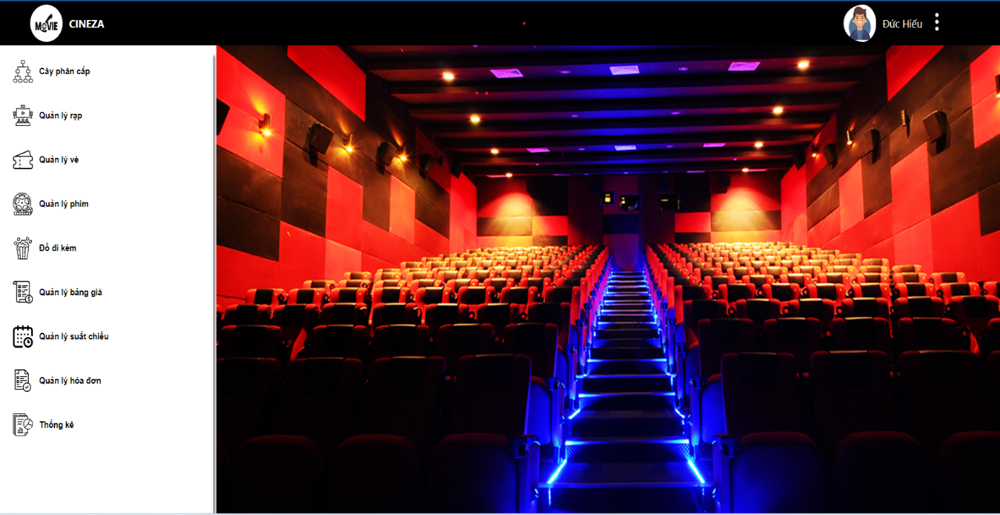

Project: Cineza (05/05/2023 – 11/09/2023)
Link project1. Overview
In the past, when people wanted to book a movie ticket, they had to go to the cinema, and there was no way to know showtimes, available seats, ticket prices for different types of seats, or the start time of a specific show unless they went to the theater in person. There were many instances where people arrived at the theater only to find out that the show was sold out. Additionally, customers faced difficulties in finding movies through traditional methods. Moreover, managing these tasks was also challenging, as all receipts and show schedules had to be manually stored on paper, making it easy for mistakes and losses to occur, causing difficulties in management and reporting. Applying technology to movie ticket booking management helps administrators reduce a large amount of work. At the same time, customers can easily search for and book the movie they love, and they can also stay informed about showtimes, schedules, and make payments quickly.
The system serves two types of users: Managers and Customers. Website platform for administrators and Mobile platform for customers
Feactures (mobile platform) for customers:
- View movie listings.
- Check showtimes, theaters, and screenings for any movie.
- View seat map and select seats.
- Make online payments.
- User authentication and authorization: Ensure users can only access features according to their permissions.
- View ticket history.
- Access account information
Feactures (website platform) for Managers:
- Filtering and search features.
- Price management.
- Movie management.
- Theater management.
- Screening room management.
- Show management.
- View ticket history
- View receipt
- View statistics
2. Role
Team size: 02 members
Role: Co-Project author
3. Technical
- Programming language: JavaScript, platform: NodeJS, library: ReactJS, framework: React Native.
- Use ZaloAPI to pay online
- Database Management System: MySQL
- Version control: GitHub
4. Feature
Home.
Movie management.
Show management.
Theater management.
Room management.
Mobile display: View seat map and select seats.
Mobile display: Screen pay.

5. Summary
The goal of addressing the difficulties caused by traditional movie ticket management and booking has been achieved. It helps administrators easily create and manage the basic functions of the movie ticket management system and meet the fundamental needs of customers that traditional booking methods could not satisfy.
Successfully developed a management website for administrators with essential functions such as customer management, theater management, screening room management, show management, pricing management, invoice management, ticket management, and revenue statistics.
Additionally, a successful movie ticket booking app for customers has been developed, featuring essential functions such as movie search, viewing movie information, show information, selecting theaters, choosing seats, online payment, and viewing purchase history.